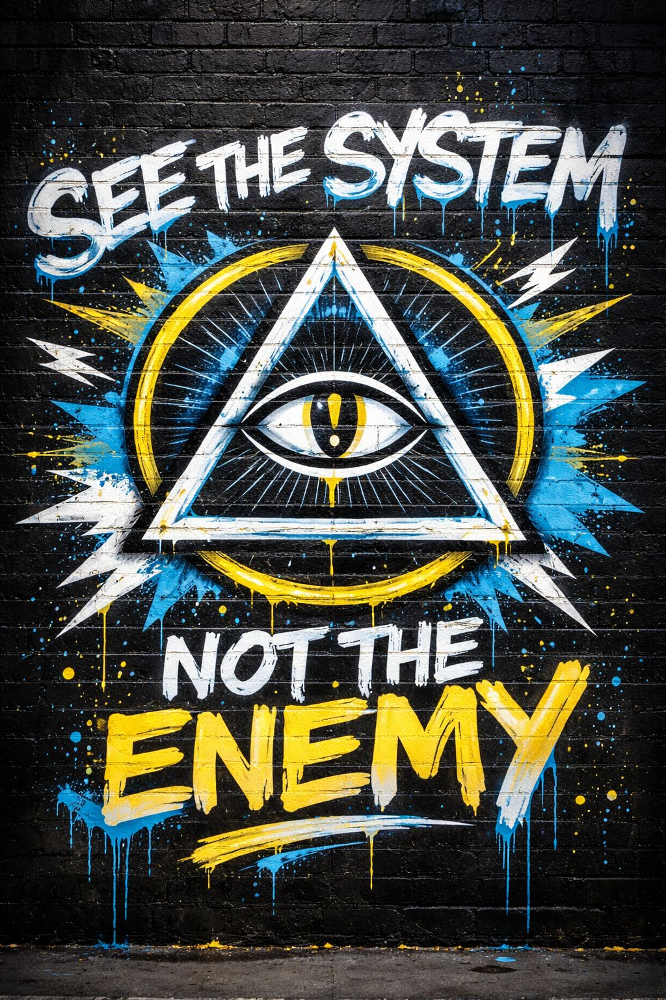

“WHY IT FEELS LIKE THERE’S NO ENEMY”
Some of you are noticing something:
“Who are we even up against?”
No villain.
No target.
No names most of the time.
Feels like we’re pointing at… nothing.
IPT doesn’t target people.
It targets patterns.
Because the moment we lock onto a person…
Now it’s not analysis anymore.
It’s just another fight in the system.
Not faces.
Mechanisms:
These don’t belong to one group.
They show up everywhere.
Because systems don’t have faces.
You can’t argue with them.
You can’t cancel them.
You can’t point and say “that’s the enemy.”
So the brain goes:
“This isn’t real.”
But it is.
You’re inside it while it’s running.
If we only stay abstract…
It starts to feel like theory.
Hard to trust.
Hard to apply.
Easy to ignore.
So we’re adjusting.
REAL SIGNAL BREAKDOWNS
Not callouts.
Not attacks.
Scans.
Maybe we take real posts and run them through the system:
No sides.
Just structure.
[note: might be a while before we get to doing this, if we actually do]
We’re not here to fight people.
We’re here to show you what’s acting on you before you even realize it.
Because once you can see it…
There is no single enemy.
There is a system that runs through everyone.
IPT doesn’t give you something to join.
It gives you the ability to see it while it’s happening.
And once you can see it clearly…
you don’t have to be pulled by it.